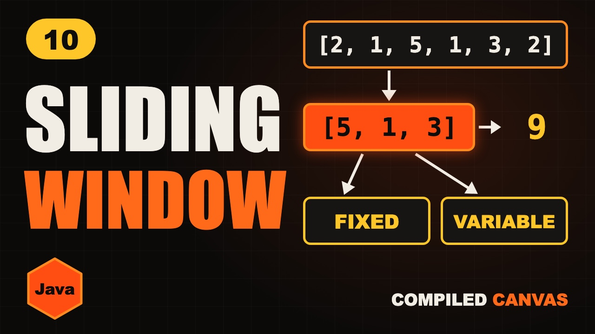

Sliding Window in Java: 2 Patterns | Fixed and Variable

The video goes live on 3 Nov 2026 at 6:00 PM IST. The notes are ready now.
?What this episode covers
You have a list of one million numbers and need the biggest sum of one thousand numbers in a row. Adding up every group from the start is about a billion additions. With a sliding window it's about two million small steps.
A window is a group of boxes in a row. A fixed window keeps its size, so each slide is one add and one subtract. A variable window grows on the right and shrinks on the left, and each box goes in once and comes out once, so it's O(n) too.
We work through the fixed window on 2, 1, 5, 1, 3, 2, and the variable window with a ₹7 snack budget. Then we write both in Java, and finish with how to spot a sliding window problem from the words in the question.
◎What you'll be able to do
- What a window is, and the two kinds
- The fixed window: add the new, drop the old
- The variable window: right grows, left shrinks
- Why both run in O(n) time and O(1) extra space
- Writing both windows in Java
- How to spot a sliding window problem
!The mistake to watch for
Shrinking a variable window with if instead of while. One drop may not be enough, so keep dropping until the window is valid. The shrinking trick also needs positive numbers: with negatives, adding a number can make the sum smaller.
✦Key moments tap one to jump there
- A billion additions vs two million steps
- Today's plan
- What is a window?
- The train window
- Fixed vs variable window
- Fixed window: the slow way
- Fixed window: add one, drop one
- Your turn: try this one
- Graph: O(n × k) vs O(n)
- Subscribe break
- Variable size sliding window: the rubber band
- Worked example: snacks on a ₹7 budget
- Why the variable window is O(n)
- Your turn: try this one
- Fixed window in Java
- Variable window in Java
- The one mistake: if instead of while
- Negative numbers, and how to spot a sliding window
- Cheat sheet
- Quiz time
- Recap
- LeetCode homework
- Next episode: Kadane's algorithm
↗Full transcript
Read the whole lesson
Here's a question. You have a list of one million numbers. Find the biggest sum of one thousand numbers in a row.
If you add up every group from the start, that's about a billion additions. Your program crawls.
But with one simple trick, you do about two million small steps. In a blink.
That trick is called the sliding window. And by the end of this video, you'll know both kinds of it.
Welcome back to Compiled Canvas. This is Episode Ten of our DSA series. Last time, we learned two pointers. Today, those two pointers carry a whole window between them. And it's one of the most asked patterns in coding interviews.
Here's the plan. What a window is. The fixed window. A graph of the speed. The variable window. Real Java code. The one mistake everyone makes. A cheat sheet. And an easy quiz at the end.
Let's go.
First, what is a window?
A window is just a group of boxes that sit next to each other, in a row. Not random boxes. Boxes in a row.
Think of sitting on a train. Your window shows three houses at a time. When the train moves, one new house appears on the right, and one old house disappears on the left. The two houses in the middle stay.
You don't look at all three houses again. You only notice what changed.
There are two kinds of windows. A fixed window always keeps the same size. A variable window grows and shrinks.
Let's start with the fixed window.
Take two, one, five, one, three, two. Find the biggest sum of three numbers in a row.
The slow way adds three numbers for every window. Two plus one plus five. Then one plus five plus one. Again and again.
Now the smart way. The first window is two, one, five. Add them once. The sum is eight. So our best is eight.
Slide one step. A new number comes in: one. An old number goes out: two. Eight plus one minus two is seven. Seven is not better. Best stays eight.
Slide again. Three comes in. One goes out. Seven plus three minus one is nine. Nine is better. Best is nine.
Slide again. Two comes in. Five goes out. Nine plus two minus five is six. Best stays nine.
The window hit the end, so we stop. The answer is nine. That's five, one, three.
Every slide was just one add and one subtract.
Your turn. Pause the video and try this one. The list is three, one, six, two, four. Find the biggest sum of three numbers in a row.
Ready? The first window is three, one, six. That's ten. Add two, drop three. Nine. Add four, drop one. Twelve. The biggest sum is twelve. If you got twelve, you've got it.
Look at this graph. Along the bottom is the size of the list. Up the side is the number of steps. Adding every window again is a steep line, because each of the n windows costs k steps. The sliding window is a low line. Each slide costs just two steps, so it's O of n.
For a million numbers and a window of a thousand, that's a billion steps against two million.
Quick pause, before we go further. If you're finding this video valuable, hit subscribe to Compiled Canvas, and turn on the bell. It's free, it takes one second, and it helps me keep making this complete DSA series for you. Alright, back to it.
Now the second kind. The variable window.
Think of a rubber band around some boxes. You stretch the right side to take in more. If it gets too much, you pull in the left side.
Two simple moves. Right grows. Left shrinks.
Here's our example. You have seven rupees. Snacks are in a row, and they cost four, two, one, six, one. You want the longest row of snacks you can buy, one after another.
Right takes the first snack. Four. The total is four. That's within seven. The length is one.
Right takes the next. Two. The total is six. Still fine. The length is two.
Right takes the next. One. The total is seven. Exactly our budget. The length is three. Best is three.
Right takes the next. Six. The total is thirteen. Too much! So left has to shrink.
Drop four. The total is nine. Still too much.
Drop two. The total is seven. Fine again. The length is two.
Right takes the last snack. One. The total is eight. Too much.
Drop one. The total is seven. Fine. The length is two.
Right reached the end, so we stop. The longest row is three snacks: four, two, one.
Here's why it's fast. Right moves forward once for every box. Left also moves forward, and it never goes back. So each box goes in once, and comes out once. That's O of n.
Your turn. Pause again and try this one. You have seven rupees, and the snacks cost two, two, three, five, one. What's the longest row you can buy?
Ready for the answer? Two, two, three adds up to seven. That's a length of three. Five makes it too much, so drop two, drop two, and drop three. Then five and one is six, a length of two. The longest row is three.
Now let's write it in Java.
Here's the fixed window. First, add the first k numbers. That sum is our best so far.
Then loop from k to the end. Add the new number, and subtract the old number.
Keep the bigger one in best.
And here's the variable window. Right walks every box in a for loop. Add the number at right to the sum.
While the sum is too big, subtract the number at left, and move left forward.
Then the window is valid again, so check its length: right minus left plus one.
Both of them take O of n time, and O of one extra space.
Now, the one mistake everyone makes.
Using if, instead of while, to shrink the window.
Remember our snacks. When the total hit thirteen, dropping one snack wasn't enough. We had to drop two. With if, you drop only one, and the window stays too big.
So always shrink with while. Keep dropping until the window is valid.
One more small tip. This shrinking trick needs positive numbers. With negative numbers, adding a number can make the sum smaller, so the rule breaks.
Here's how to spot a sliding window. The question says in a row, or subarray, or substring. And it asks for the biggest, the smallest, or the longest.
So, here's the whole sliding window in one cheat sheet. Pause and screenshot this.
A window is boxes in a row.
Fixed window: add the new, drop the old.
Variable window: right grows, left shrinks.
Shrink with while, not if.
Time: O of n. Extra space: O of one.
And spot it by the words: in a row, subarray, substring.
Okay, quiz time. Three easy questions. Pause the video, think, and then hit play.
Question one. Find the biggest sum of exactly five numbers in a row. Is that a fixed window, or a variable window?
Question two. The list is one, three, two, four. What is the biggest sum of two numbers in a row?
Question three. Should you shrink a variable window with if, or with while?
Ready?
Question one: fixed. The size is always five.
Question two: six. One plus three is four. Three plus two is five. Two plus four is six.
Question three: while. One drop may not be enough.
How many did you get right? Tell me in the comments: three out of three, two, or one.
Let's recap. A window is a group of boxes in a row. A fixed window keeps its size, so you add the new and drop the old. A variable window grows on the right, and shrinks on the left. Always shrink with while. Each box goes in once and comes out once, so it's O of n.
Your homework. Solve Maximum Average Subarray on LeetCode. It's the fixed window. Then try Minimum Size Subarray Sum. It's the variable window. All of them, with hints and full Java answers, are on our free practice page. The link is in the description. And tell me in the comments: in the list five, one, three, two, what is the biggest sum of two numbers in a row?
Next episode, we learn Kadane's algorithm. It finds the biggest sum of any length, in one single pass, and it's a favourite in interviews.
And don't forget to subscribe to Compiled Canvas, so you don't miss anything new in tech and the job market. Keep coding, stay consistent, and I'll see you in the next one.